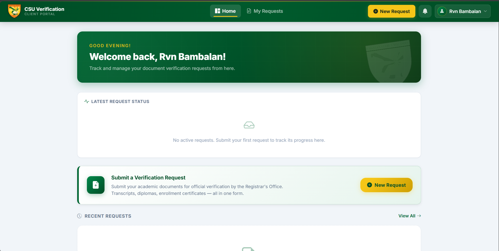
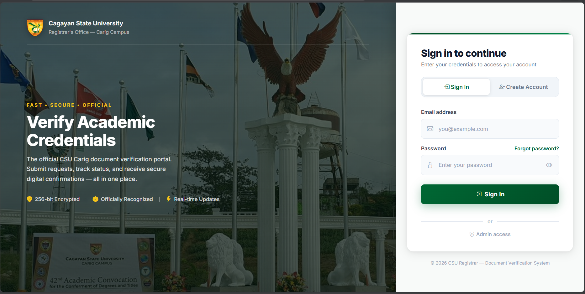
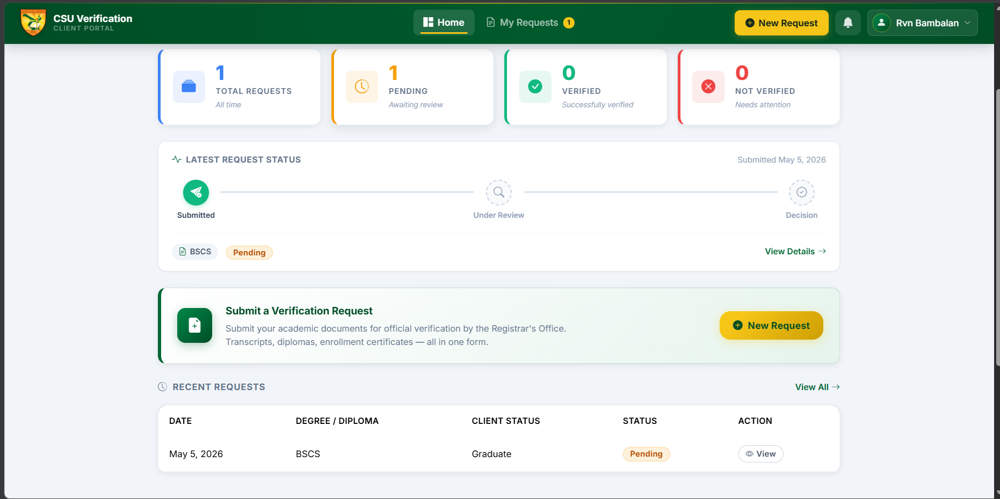

RVN Navarrette
Aspiring Developer | Full-Stack Web Development Learner | System Builder
I build practical web systems focused on solving real-world problems through simple, useful, and accessible digital solutions.
View My Featured Project
Aspiring Developer | Full-Stack Web Development Learner | System Builder
I build practical web systems focused on solving real-world problems through simple, useful, and accessible digital solutions.
View My Featured ProjectHi! I’m RVN Navarrette, an aspiring developer currently learning and building web-based systems. I am interested in full-stack development, database-driven applications, automation, and creating digital tools that improve manual workflows.
My current focus is building practical systems for academic and administrative use, including online portals, dashboards, verification tools, and reporting modules.
A real-time, role-based credential verification platform built with Supabase and vanilla JavaScript — digitizing the registrar verification process of Cagayan State University – Carig Campus.

The CSU Registrar Verification System is a full-stack web application developed for the Cagayan State University – Carig Campus Registrar's Office. It digitizes the academic credential verification process between alumni/students and registrar staff.
The system replaces traditional walk-in and email-based document verification workflows with a secure online portal where clients can submit verification requests and track them in real time, while registrar staff manage requests, student records, reports, and printable verification letters from one dashboard.
University registrars handle many credential verification requests from employers, foreign institutions, graduates, and other third parties. Manual processing can be slow, repetitive, error-prone, and lacks transparency for clients. This system helps make the process faster, more organized, and easier to track.
Full-stack developer responsible for building the client portal, admin dashboard, real-time status updates, database integration, reports module, public verification page, and overall system interface.
Since this is a private institutional project, I showcase selected screenshots only. Sensitive student information, records, and internal data are hidden or blurred.

Login and authentication page

Client dashboard with request status tracking

Admin dashboard for managing verification requests

Reports and enrollment analytics module
Status: Active Development / Private Institutional Project
Privacy Note: This system is privately maintained for institutional use. Public source code and live system access are restricted.
GitHub: github.com/rvnnavarrette
Website: rvnnavarrette.github.io